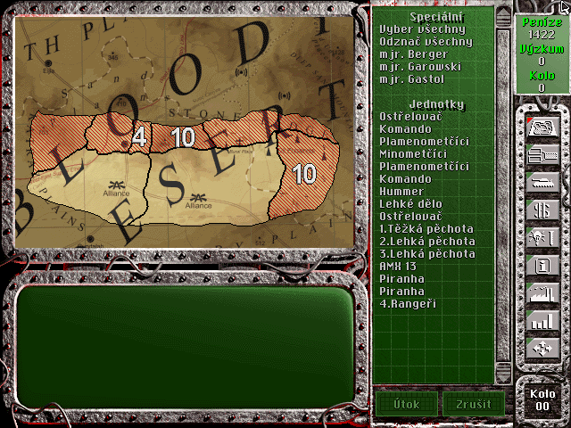
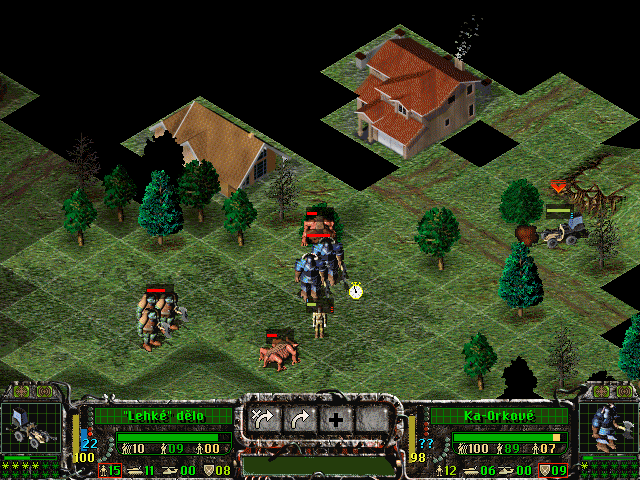

|
Spellcross Mod - Port CZ dat pro EN engine
Jedná se o mod ke høe Spellcross urèený pro mùj nástroj Spellcross Mod Launcher.
Pøednì jde o konverzi dat z originální CZ verze hry pro EN engine. EN engine má proti pùvodní CZ verzi pár vylepšení. Pøednì umožòuje skupinový pohyb jednotek.
Dále také pøidává nìkteré grafické vylepšení jako animace smrti jednotek. Bohužel z EN verze byla odstranìna øada misí. Proto jsem vytvoøil tento mod, který do EN enginu portuje všechna CZ data.
Zároveò jsem také vše pøeložil (alespoò doufám, že jsem na nic nezapomnìl). Mod je naladìn pro obtížnost Veterán (EN verze zná jen dvì: Zaèáteèník a Veterán). Mod ale také zavádí také øadu dalších úprav:
- Doplnìní vyøazených misí.
- Opravy známých bugù v misích.
- Dvì nové jednotky - Lehké dìlo a Sniper.
- Pár nových položek k výzkumu.
- Pøeklad všech textù do CZ.
- Nahrazení EN dabingu èeským.
- Konverze CZ videí pro EN engine - zde došlo k jisté ztrátì kvality, protože CZ engine používá proprietární formát zatímco EN verze klasický Smacker v2. Díky tomu bylo nutné nahrát CZ videa pøes DOSbox a následnì je pøekódovat pomocí RAD Video tools do SMK2. Ale koukat se na to dá.
- Zvýšení maximální XP jednotek hráèe - jednotky získávají zkušenost podstatnì pomaleji, takže nejsou na levelu 12 skoro od zaèátku (to byla potom dost nuda).
- Poladìní vlastností jednotek hráèe - napø. vyšší dosah pro Roland.
- Poladìní vlastností jednotek nepøítele - napø. skoro všechny jednotky mohou útoèit na vzdušné cíle.
- Poladìní vlastností vylepšení - napø. menší bonus pro Terminátora (to byl dost overkill) a vyšší ceny.
- Volitelná vyšší obtížnost misí - maximalizace poètu jednotek a zvýšení jejich XP hned od zaèátku.
- Volitelná vyšší tuhost nepøátel - postupné zvyšování parametrù nepøítel s každým dalším levelem hry, aby hra zùstala zábavná.
- Volitelná randomizace jednotek - v nìkterých misích se pøi spuštìní modu randomizují typy nìkterých jednotek.
|

|
|

|
Instalace a použití
Pøednì je tøeba se nìkde obstarat funkèní EN verzi hry. Oficiálnì se asi dnes již sehnat nedá, takže je tøeba pohledat. Ideální je verze, která po instalaci má všechny datové soubory (*.FS a *.FSU) ve složce DATA.
Nìkteré verze vyžadují CD a èást souborù zùstane na CD (hlavnì MOVIE.FS). CD pochopitelnì nelze modifikovat, takže je tøeba kopírovat jeho obsah do nìjaké složky a následnì ji podstrèit
Spellcross Mod Launcheru. Ten ji pøes DOSbox namontuje jako virtuální CD. Ne vždy to ovšem hra akceptuje. Proto existují i pro EN verzi patche (nebo crack), které
detekci CD potlaèují. Chce to prostì hledat a vyzkoušet.
Po získání funkèní verze hry je tøeba stáhnout nástroj Spellcross Mod Launcher a DOSbox a vyzkoušet, že to vùbec funguje bez modu.
Samotný mod staèí stáhnout a nìkam rozbalit. Je ale velmi vhodné mít ho na stejné jednotce, jako hru! Díky tomu se modifikované soubory fyzicky nekopírují, jen se pøepisují reference v alokaèních tabulkách souborového systému. V opaèném pøípadì by docházelo pøi každém spuštìní hry ke kopírování asi 250MB data tam a zpìt za což Vám SSD disk nepodìkuje. Pøi dnešních cenách bych si na to dal pozor.
Nastavení
Mod mìl být pùvodnì s pevným nastavením, ale postupnì jsem do nìj implementoval pøepínaèe, které umožòují jeho vlastnosti parametrizovat. Dostupná nastavení aktuální verze:
- Missions - Lze zvolit pùvodní neupravení mise CZ hry (Normal) nebo upravené mise s maximálním poètem jednotek a vyšším XP (Hard). Zkušeným jednoznaènì doporuèují Hard.
- Level - Toto nastavení by se mìlo naèíst samo podle poslední uložené pozice ve WORKDIR. Lze ho ale mìnit i ruènì a pro novou hru je to tøeba udìlat. Tento parametr je modem používán k postupnému zvyšování síly nepøátel.
- Language - Lze zvolit jazyk. Tento option není kompletní, protože v EN verzi chybí nìkteré texty, takže použití EN verze bez záruky.
- Elevate enemy stats with game levels - Aktivuje postupné zvyšování síly nepøátel s levelem hry. Zkušeným jednoznaènì doporuèuji zapnout. Funkce se pochopitelnì projeví vždy až po novém spuštìní hry, takže pøi pøechodu na nový level je tøeba hru restartovat.
- Hide initial loader screens - Odstraní úvodní animace hry. Dívat se na nì 50x je trochu otrava, ale proti gustu...
- Anti-tank Orks - Nìkteré verze hry mají pro AT-Orky bonus útoku na tìžké jednoty kdy prakticky co výstøel to znièený tank bez ohledu na obranné èíslo. To mùže zkazit den. Bohužel tento bonus je napevno zadrátován v binárce hry, ale podaøilo se mi ho zneškodnit prohozením jednotek v JEDNOTKY.DEF, takže pokud chcete pùvodní obtížnost originální CZ verze bez patche, tak lze nastavit hodnotu Easy.
- Destructor reporting - Destruktory mají ponìkud iritující dabing. Tímto parametrem ho lze odstranit nebo nahradit za normálnìjší UDES.
Download a updaty
Nové verze modu jsou dostupné na gitu.
(c) 2026, Stanislav Mašláò - Všechna práva vyhrazena.
|